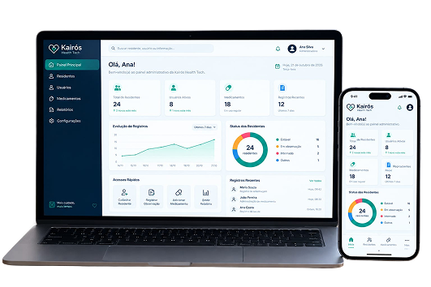

Cadastro e consulta de idosos
Registre e acesse as informações dos residentes de forma rápida e organizada.
A Kairós Health Tech oferece uma plataforma web com funcionalidades que auxiliam no dia a dia das instituições de longa permanência para idosos, contribuindo para uma gestão mais organizada, segura e eficiente.
Conheça a plataforma
Conheça os principais recursos da plataforma administrativa da Kairós Health Tech.
Registre e acesse as informações dos residentes de forma rápida e organizada.
Controle os profissionais que têm acesso ao sistema e defina permissões.
Mantenha um histórico de anotações e acompanhamentos dos residentes.
Organize e acompanhe as informações sobre os medicamentos cadastrados.
Visualize dados e gere relatórios para apoiar a tomada de decisão e o controle administrativo.
Mais organização, rastreabilidade e segurança nas informações.
Personalize o sistema de acordo com a necessidade da sua instituição.
Tudo integrado para uma gestão mais eficiente e um cuidado ainda melhor.
Entre em contato com a Kairós e descubra como nossa plataforma pode ajudar sua instituição.